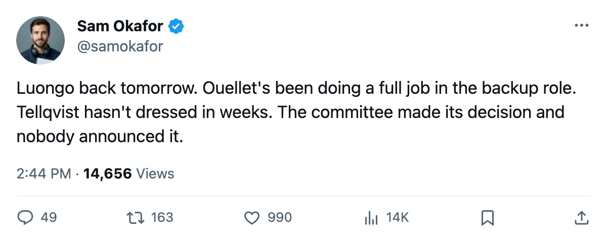

TOR
TORGoalie Room: Luongo's return is tomorrow, Ouellet's 8 full starts, and the $1.20M man the committee can't find a slot for
Tellqvist sits at -5 on the Bureau's Index, 10 starts on the season, and hasn't dressed since the committee went two-deep
 Sam OkaforLeafs beat reporter · Queen City Telegram
Sam OkaforLeafs beat reporter · Queen City Telegram
Code Green

 Roberto Luongo95 carries a return date of 2006-01-06 on Toronto's roster.
Roberto Luongo95 carries a return date of 2006-01-06 on Toronto's roster.  Boston Bruins plays at the ACC on 2006-01-07, so the 26-year-old has less than 36 hours between his expected return and a matchup against the only team holding a winning record against this club.
Boston Bruins plays at the ACC on 2006-01-07, so the 26-year-old has less than 36 hours between his expected return and a matchup against the only team holding a winning record against this club.
Luongo has 22 starts. Maxime Ouellet86 has 8. Mikael Tellqvist73 has 10 on the season and sits at -5 on the Bureau's Development Index, one of the deeper fallers in the league. He carries a 6-year contract at $1.20M. He is not dressed.
| goalie | gp | mpg | salary | term | index |
|---|---|---|---|---|---|
| Roberto Luongo | 22 | 60.3 | $1.60M | 1 yr | - |
| Maxime Ouellet | 8 | 60.5 | $0.90M | 1 yr | - |
| Mikael Tellqvist | 10 | 60.4 | $1.20M | 6 yrs | -5 |
The committee was supposed to be three-deep. It went two-deep somewhere in November when Luongo and Ouellet split starts and Tellqvist started 0 of them. That split holds. Luongo and Ouellet have carried every game since the pattern set, and Tellqvist watches from the press box.
Ouellet at 60.5 minutes a night is full starts. He is 24, carries a $0.90M cap hit, and gives the coaching staff a working backup who does not need a long look before the next game. Luongo's 22 starts in 40 games is the workload of an unquestioned starter. The committee never went back to Tellqvist.
The -5 on the Index is the form term the Bureau publishes: it means the 73 overall reads 5 below his base. That is the lowest form reading on this roster. A -5 at $1.20M for 5 more seasons locks him into the system whether or not anyone plays him. The only exit is a trade, and what the calendar has as the trade deadline is 73 days away.
Luongo returns into a crease he has owned since October. Ouellet gives him rest without a visible drop-off. Tellqvist watches from the press box on a deal that won't come off the books until he is 31 years old. The committee has answered its own question, and the answer was two.
